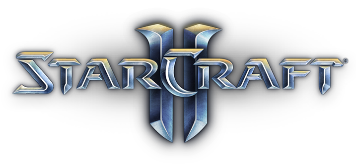

Playing StarCraft II with Reinforcement Learning
StarCraft2 Swaggers
| " " | Dolly Ye | Shraddha Agrawal | Aria Chang | Axel A Hernandez | Rhys Li(not here) |
StarCraft II

As defined on the Blizzard website (the company that develops the game):
StarCraft II: Wings of Liberty is the long-awaited sequel to the original StarCraft, Blizzard Entertainment’s critically acclaimed sci-fi real-time strategy (RTS) game. StarCraft II: Wings of Liberty is both a challenging single-player game and a fast-paced multiplayer game. In typical real-time strategy games, players build armies and vie for control of the battlefield. The armies in play can be as small as a single squad of Marines or as large as a full-blown planetary invasion force. As commander, you observe the battlefield from a top-down perspective and issue orders to your units in real time. Strategic thinking is key to success; you need to gather information about your opponents, anticipate their moves, outflank their attacks, and formulate a winning strategy.
It combines fast paced micro-actions with the need for high-level planning and execution. Over the previous two decades, StarCraft I and II have been pioneering and enduring e-sports, 2 with millions of casual and highly competitive professional players. Defeating top human players therefore becomes a meaningful and measurable long-term objective.
From a reinforcement learning perspective, StarCraft II also offers an unparalleled opportunity to explore many challenging new frontiers:
- It is a multi-agent problem in which several players compete for influence and resources. It is also multi-agent at a lower-level: each player controls hundreds of units, which need to collaborate to achieve a common goal.
- It is an imperfect information game. The map is only partially observed via a local camera, which must be actively moved in order for the player to integrate.
PySC2 Environment
| StarCarft II | Google DeepMind | Python | TensorFlow |
PySC2 is DeepMind's Python component of the StarCraft II Learning Environment (SC2LE). It exposes Blizzard Entertainment's StarCraft II Machine Learning API as a Python reinforcement learning (RL) Environment. This is a collaboration between DeepMind and Blizzard to develop StarCraft II into a rich environment for RL research. PySC2 provides an interface for RL agents to interact with StarCraft 2, getting observations and rewards and sending actions.
The image below explains how SC2LE works combining StarCarft II API with Google DeepMind Libraries:
Fig. 1: SC2LE. Source: [1].
The two important components of the envrionment are:
- Mini-game maps
- Replays
Objectives
In Starcraft 2, no matter how good you are at combat or economy maximization, you cannot win a game without judicious selection of units, structures and buildings. We want to tackle the problem of build order optimization. Concretely, build order consists of finding concurrent action sequences constrained by unit dependencies and resource availability, such as creating a certain number of units and structures in the shortest amount of time possible.
Background Knowledge
Before starting to train a SC2 agent in the PySC2 environment, we went through a series of tutorials, which implement reinforcement learning agents using Pytorch and the OpenAI gym environment.
Essential Algorithms:
- Demystifying deep reinforcement learning
- Q-Learning with Tables and Neural Networks
- Two-armed Bandit
- Contextual Bandits
- Policy-based Agents
- Model-Based RL
- Deep Q-Networks and Beyond
- Visualizing an Agent’s Thoughts and Actions
- Partial Observability and Deep Recurrent Q-Networks
- Action-Selection Strategies for Exploration
- Asynchronous Actor-Critic Agents (A3C)
Q-Learning
Q(s,a) is equal to the summation of immediate reward after performing action a while in state s and the discounted expected future reward. It represents how good a certain action is in given state. Q-learning agent seeks to maximize its total (future) reward by adding the maximum expected reward attainable from the future state to the reward in its current state.
Here are some implementations of Q-learning agents: Steven Brown's and Morvan Zhou's .
Deep Q-Network
DQN's main innovation over Q-learning is that it has two separate networks: an action network and a target network. The action network selects action, its parameters are trainable.The target network is a history version of the action network, its parameters are untrainable. It is updated infrequently– every C steps.The target network computes the loss for every action during training. Why not use just use one network for both estimations? The issue is that at every step of training, the Q-network’s values shift, and if we are using a constantly shifting set of values to adjust our network values, then the value estimations can easily spiral out of control. In order to make training more stable, the target network’s weights are fixed, and only periodically or slowly updated to the primary Q-networks values.
Check out this tutorial on how to use PyTorch to train a DQN agent .
From Q-Learning to DQN
Q-Learning is a table of values for every state (row) and action (column) possible in the environment. Within each cell of the table, we learn a value for how good it is to take a given action within a given state. We start by initializing the table to be uniform (all zeros), and then as we observe the rewards we obtain for various actions, we update the table accordingly. our Q-table using something called the Bellman equation, which states that the expected long-term reward for a given action is equal to the immediate reward from the current action combined with the expected reward from the best future action taken at the following state.
In order to go from Q-learning to DQN, these are the following things we implement:
- Going from a single-layer network to a multi-layer convolutional network.
- Implementing Experience Replay, which will allow our network to train itself using stored memories from it’s experience.
- Utilizing a second “target” network, which we will use to compute target Q-values during our updates.
The transition is depicted here:
Fig. 2: Getting from Q-Network to Deep Q-Network. Source [4].Training RL agents
Objective
Inspired by Atari-Net, Our project addresses build order problem with a reinforcement learning approach.
Fig. 3: Atari-Net. Source [1].Our initial project proposal focused on using reinforcement learning to optimize the problem of build-order optimization in the game of StarCraft II. Throughout the quarter, we experimented with different approaches to achieve some results that no other existing published bot has achieved. Given the time and resources we have available, our definition of success rested on the fact that our bot could beat the easy built-in StarCraft II AI on a minimap while running Terran against a fixed race. After a quarter of trial and error, we obtained substantial results by improving the refined agent published by Steven Brown.
Our agents
Supreme Bot
Refined agent uses the PySC2 AI environment for an RL agent using a Q-Table from having a win rate of less than 20% to, eventually, a win rate of over 70%. We delineated from the other choices of ML models and resorted to building a comprehensive agent that learns as it plays against the built-in AI in real time. Compared to the refined agent which Steven Brown uses to achieve the 70%+ win rate, our agent uses the Q-Table actions of building tech lab, which allows production units to build advanced army units, and reactors, which “ lengthens the build queue by three slots and allows two units to be built simultaneously” (starcraft wikia).

Fig. 4: (Left) Results after 7 days of training vs (Right) DeepMind results. At the right hand side, the colors represent: (1) Light red, Atari-Net; (2) Light blue, Fully Conv.; (3) Dark blue, Fully Conv. with LSTM.DQN Bot
PySC2 api provides critical information, such as reward and episode, an agent gets after performing an action, which makes DQN especially suitable for the task. A Starcraft RL agent observes the current state of the environment and chooses an action, the environment transitions to a new state, and also returns a reward that indicates the consequences of the action. We encode six pieces of information as our state: whether the player can move, where the player is located, supply depot count,barracks count, supply limit and army supply.We passed the state into the neural network, which, after training, would return an action that yields the highest expected reward.
A highlight of DQN is the usage of experience replay. We created a replay memory class that stores sequences of state, action, next state, and rewards that the agent observes. By sampling from the replay memory randomly, the transitions that build up a batch are decorrelated. It has been shown that this greatly stabilizes and improves the DQN training procedure. The magic of DQN happens inside the ‘optimize’ method, which performs a single step of the optimization. It first samples a batch, concatenates all the tensors into a single one, computes Q(st,at) and V(st+1)=maxaQ(st+1,a), and combines them into our loss. Aside from the neural network, we hard-coded 9 actions and conditions to perform certain action into the DQN bot.
Evaluation
Results and Conclusions
Due to constraint of time and resources, we were not achieved Deep Mind's performance. We focused more on reading research paper, learning about RL agorithms, doing tutorials rather than constructing new techniques from beginning.
Journey
In the quater long project, we came across several challenges and new ideas. This is a brief of our journey: One of our original course of actions was to use parsed replay data to train the agent using NNs to learn strategies. It would intake information about the state and output abstracted actions that the agent would perform. However, that was not realistic because we faced troubles parsing the data in the right way. Primarily, the initial data set of raw replays we found, the SC2LE dataset, was not encoded correctly for the updated version of SC2. Using sc2reader, we were able to correctly parse replay data only for raw replays that were saved before early 2016. We were able to collect slightly over 1,000 parsed replays amongst all 3 races using the sc2reader library. This however, took a huge portion of our time, and once we started working on implementing the NN it was already week 6. Due to the time constraint and the fact that we lacked a working agent, we did not have a concrete plan of how to map the actions returned by the replay data and those of the agent. At this point we decided to split the work, where some of us continued to implement a NN, while others began implementing a DQN implementation. With the NN, we decided to make it Recurrent given the idea that an agent should learn what to do at specific states in the game based on previous states that happened. We tried to implement an LSTM RNN using Pytorch and also Tensorflow, but we ran into trouble when dealing with the dimensionality of the input since we had data that all had different number of states, ranging from 100 states in the game to 5000 states. We tried methods such as batching the data and padding the states with 0’s in order to input the same size of states per batch. We reached the point where the RNN was capable of producing a forward pass but unable to correctly perform back propagation. Unfortunately, this was very late in the quarter (week 8) and our DQN implementation was working better, but still not fully. So in order to finish before the given deadline, we had to drop the RNN and focus all our efforts on finishing the agent using Q-Table, until we managed to get it to work. The time we had left to train it however, was not enough for it to learn fully.
Overall, it was a fun and challenging project to learn about artificial intelligence. In the future, we plan to continue researching this field and learn more about it.
This project was developed during the ECS 170:Artificial Intelligence Course at UC Davis, Spring 2018.
Example video of a trained agent

References
- Vinyals, O., Ewalds, T., Bartunov, S., Georgiev, P., Vezhnevets, A. S., Yeo, M., … Tsing, R. (2017). StarCraft II: A New Challenge for Reinforcement Learning, link
- Simple Reinforcement Learning with Tensorflow series, Arthur Juliani, link (Accessed: 2017/12/11)
- Volodymyr Mnih, Adria Puigdomenech Badia, Mehdi Mirza, Alex Graves, Timothy P Lillicrap, Tim Harley, David Silver, and Koray Kavukcuoglu. Asynchronous methods for deep reinforcement learning. ICML, 2016, link
- Szepesvári, C. (2010). Algorithms for reinforcement learning. Synthesis lectures on artificial intelligence and machine learning, link
- Mnih, V., Kavukcuoglu, K., Silver, D., Graves, A., Antonoglou, I., Wierstra, D., & Riedmiller, M. (2013). Playing Atari with Deep Reinforcement Learning, 1–9, link